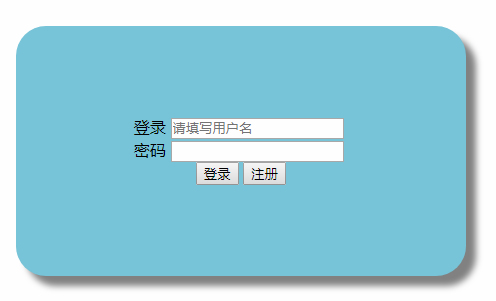
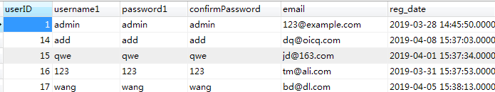

首先放一张天空之城
Php入门来的第一个小项目，首先做的是一个简陋的文章管理系统。有登录、注册、文章list、添加文章、修改文章、删除文章、分页这几个小功能。
本文介绍我在登录、注册功能上的学习、理解和实践。
刚学习完php函数和简单的html，连js、ajax完全不会。起初想搞一个美观优雅的登录注册界面，但是碍于能力有限，最后写了一个宇宙中最无敌简陋的登录模板，然后开始写后端数据处理。

模板想用的代码login.php
1 <!DOCTYPE html>
2 <html>
3 <head>
4 <meta charset="UTF-8">
5 <title>login page</title>
6 </head>
7 <body>
8 <br>
9 <br>
10 <br>
11 <br>
12 <br>
13 <br>
14 <br>
15 <br>
16 <br>
17 <br>
18 <br>
19 <br>
20 <br>
21 <div>
22 <div style="width: 775px; height: 250px; float: left">
23
24 </div>
25 <div align="center" style=" background-color: #78c4d8;display: table; height: 250px;width: 450px;box-shadow: 10px 10px 10px #828282;
26 border-radius: 30px">
27 <div style="height: 89.5px">
28
29 </div>
30
31 <form action="../Controller/login.php" method="POST" align="center">
32 登录
33 <input type="text" name="username1" size="20" maxlength="15"
34 placeholder="请填写用户名">
35 <br>
36 密码
37 <input type="password"
38 name="password1" size="20" maxlength="15"> <br>
39 <input
40 type="submit" name="submit" value="登录">
41 <input type="button"
42 onclick="window.location.href='register.html'" value="注册">
43 </form>
44 </div>
45 </div>
46 </body>
47 </html>
别问我面向对象是什么？我这时候还不懂，啥也不懂，本科没好好学c++和java，我错了（已跪）。
接着我用面向过程的语言就写成了这个玩意儿……
login.php
1 <?php
2 session_start();
3
4 //注销登录
5 if(@$_GET['action'] == 'logout') {
6
7 unset($_SESSION['username1']);
8 unset($_SESSION['userID']);
9 echo '注销登录成功！点击此处 <a href="../View/login.html">登录</a>';
10 exit;
11 }
12
13
14 $username1 = $_POST ['username1'];
15 $password1 = $_POST ['password1'];
16
17 include "../../../Common/dataBase.php";
18
19 $check_query = mysqli_query($conn,"select userID from think_userrg where username1='$username1' and password1='$password1' limit 1");
20
21
22 if ($result = mysqli_fetch_array($check_query)) {
23 //登陆成功
24 $_SESSION['username1'] =$username1;
25 $_SESSION['userID'] =$result['userID'];
26 echo $username1, ',登录成功！欢迎您！<a href="../View/articleList.php">如果您的浏览器没有自动跳转，请点击这里</a>
27 ' . '<script>
28 setTimeout(function(){window.location.href=\'../View/articleList.php\';},3000)
29 </script>' ;
30 echo '点击此处 <a href= "login.php?action=logout">注销</a>登录！<br />';
31 exit;
32 } else {
33 die ( '登录失败！点击此处<a href ="javascript:history.back(-1);">返回</a>重试' );
34 }
35
36 /**
37 * 判断是否为
38 * 1.非submit事件
39 * 2.非注销事件
40 */
41 if (!isset($_POST['submit']) && !($_GET['action'] == 'logout')){
42 die('非法访问！');
43 }
44
45 ?>
1.用户名和密码正确，点击登录，可以成功。
2.用户名不存在或者用户名存在，密码错误，都报错，跳转错误页面，返回登录初始界面。
（哦，忘了给看数据库结构了）
think_userrg表

以下是注册的模板
平平淡淡才是真~
代码如下register.html
1 <!DOCTYPE html>
2 <html>
3 <head>
4 <meta charset="UTF-8">
5 <title>register</title>
6 </head>
7 <body>
8 <br>
9 <br>
10 <br>
11 <br>
12 <br>
13 <br>
14 <br>
15 <br>
16 <br>
17 <br>
18 <br>
19 <br>
20 <form action="../Controller/register.php" method="POST" enctype="multipart/form-data"
21 align="center">
22
23 用户名： <input type="text" name="username1" size="20" maxlength="15"
24 placeholder="必须填写用户名"> <br> 登录密码： <input type="password"
25 name="password1" size="20" maxlength="15"> <br> 确认密码： <input
26 type="password" name="confirmPassword" size="20" maxlength="15">
27 <br> <input type="submit" name="submit" value="注册"> <input
28 type="button" name="back" value="返回"
29 onclick="window.location.href='login.html'">
30 </form>
31
32 </body>
33 </html>
然后是后端register.php
1 <?php
2 include "../../../Common/dataBase.php";
3
4 if (empty ( $_POST )) {
5 exit ( "您提交的表单数据超过post_max_size!<br>" );
6 }
7
8 // 判断输入密码与确认密码是否相同
9 $password1 = $_POST ['password1'];
10 $confirmPassword = $_POST ['confirmPassword'];
11 if ($password1 != $confirmPassword) {
12 exit ('两次输入的密码不相同！<a href ="../View/register.html">返回重试</a>');
13 }
14
15 $username1 = $_POST ['username1'];
16
17 // 判断用户名是否重复
18 $usernameSQL = "select * from userrg where username1 = '$username1'";
19 $resultSet = mysqli_query ($conn, $usernameSQL );
20
21 $row = mysqli_fetch_array($resultSet);
22 //判断用户名是否存在
23 if ($username1 == $row['username1']) {
24 die ('用户名被占用，请更换其他用户名<a href ="../View/register.html">返回重试</a>');
25 }else{
26
27 $sql = "insert into userrg (username1,password1,confirmPassword)
28 values ('$username1','$password1','$confirmPassword')";
29 mysqli_query ($conn,$sql);
30 // 注册成功跳转到登录界面
31 die ('注册成功！点击此处<a href="../View/login.html">登录</a>');
32 }
33
34
35
36
37 ?>
然后就没了。
你居然没走？真的机智！机智如我~ ：）
说明一下，以上是其实不是最初的版本，是改了好多次之后的终于变成我自己代码的代码。
接下来是我学习了面向对象之后，对原来代码的修改。
我师傅说虽然是写成了一个个类文件，但是还是有点面向过程的思维，我自己也觉得是这样子，我也不敢说，我也不敢问，我就是个年幼的程序猿。
话不多说，直接上代码。
注意：登录的注册功能还应用了两个文件。我会在末尾也贴出来。
登录处理代码Login.php
1 <?php
2 //namespace A;
3 //use A\User;
4 /**
5 * Login类
6 */
7 require_once '../../Back/User/User.php';
8 include '../../MySQLDB.php';
9
10 class Login extends User
11 {
12 function __construct()
13 {
14 }
15
16 public function check($usernm, $userpwd)
17 {
18
19 $arr = array(
20 'dbname' => 'newpage'
21 );
22 $db = MySQLDB::getInstance($arr);
23 $sql = "select uid from new_user where usernm='$usernm' and userpwd='$userpwd' limit 1";
24 if ($result = $db->fetchArray($sql) ) {
25 echo $usernm . "欢迎您，点击<a href='../Article/list.php'>此处</a>跳转主页";
26 } else
27 die("密码错误");
28 }
29 }
30
31 $usernm = $_POST['usernm'];
32 $userpwd = $_POST['userpwd'];
33
34 $log = new Login();
35 $log->is_POST();
36 $a = $usernm;
37 $b = $userpwd;
38 $log->is_empty($a, $b);
39 $log->check($a, $b);
40
41 ?>注册处理代码Register.php
1 <?php
2 // namespace User\Register;
3
4 require_once '../../Back/User/User.php';
5 include '../../MySQLDB.php';
6 //var_dump($_POST['usernm']);
7 //var_dump($_POST['userpwd']);
8
9 /**
10 * Register类
11 */
12 class Register extends User
13 {
14 #注册账户方法
15 function __construct()
16 {
17
18 // $usernm= $_POST['usernm'];
19 // $userpwd=$_POST['userpwd'];
20 // $userrepwd=$_POST['userrepwd'];
21
22 }
23
24 #判断两次输入的密码是否相同
25 public function pwdSame()
26 {
27 $userpwd = $_POST['userpwd'];
28 $userrepwd = $_POST['userrepwd'];
29 if ($userpwd != $userrepwd) {
30 die ("两次输入的密码不相同！请重试！");
31 }
32
33 }
34
35
36
37 #将用户信息写入数据库
38 public function query()
39 {
40 $usernm = $_POST['usernm'];
41 $userpwd = $_POST['userpwd'];
42 $createtime = date("Y-m-d H:i:s", time());
43 $arr = array(
44 'dbname' => 'newpage'
45 );
46 $db = MySQLDB::getInstance($arr);
47 $sql = "insert into new_user (usernm,userpwd,createtime) value ('$usernm','$userpwd','$createtime')";
48 if ($result = $db->my_query($sql)) {
49 die('注册成功！点击此处<a href="../Login/Login.html">登录</a>');
50 } else
51 return false;
52 }
53
54 #加载选择数据库信息方法
55 public function dbname()
56 {
57 }
58 }
59
60
61 $usernm = $_POST['usernm'];
62 $userpwd = $_POST['userpwd'];
63
64
65 $reg = new Register();
66 $a = $usernm;
67 $b = $userpwd;
68 $reg->is_empty($a, $b);
69
70 $reg->is_POST();
71 $reg->pwdSame();
72 $reg->is_repeat();
73 $reg->query();
74
75
76 ?>
附件1：User.php
1 <?php
2 /**
3 * Created by PhpStorm.
4 * User: ts-jinjinying
5 * Date: 2019/6/13
6 * Time: 10:40
7 */
8
9 //namespace A;
10
11 /**
12 * User类
13 */
14 class User
15 {
16 /**
17 * 用户类的属性
18 * @param string $usernm 用户名
19 * @param int $uid 用户ID
20 * @param string $userpwd 密码
21 * @param string $userrepwd
22 * @param datetime $createtime 创建时间
23 */
24 public $usernm;
25 public $uid;
26 public $userpwd;
27 public $userrepwd;
28 public $createtime;
29
30 #初始化对象属性
31 public function __construct($usernm, $userpwd)
32 {
33 $this->usernm = $usernm;
34 $this->userpwd = $userpwd;
35 }
36
37 #判断是否提交
38 public function is_POST()
39 {
40 if (!(isset($_POST['submit']))) {
41 return false;
42 }
43 }
44
45 #判断是否为空
46 public function is_empty($a, $b)
47 {
48 if (empty($a && $b))
49 die("用户名或密码不能为空");
50 }
51
52 #判断用户名是否重复
53 public function is_repeat()
54 {
55 $usernm = $_POST['usernm'];
56 $arr = array(
57 'dbname' => 'newpage'
58 );
59 $select = MySQLDB::getInstance($arr);
60 $usernmSql = "select * from new_user where usernm = '$usernm'";
61
62 $row = $select->fetchRow($usernmSql);
63 if ($usernm == $row['usernm']) {
64 die("用户名被占用，请更换其他用户名！");
65 } else {
66 echo "用户名合法！";
67 }
68 }
69
70
71 #注销方法
72 public function logout()
73 {
74 if ('合法') {
75 echo "注销成功";
76 } else
77 return false;
78 }
79
80 function __destruct()
81 {
82 }
83 }
附件2：MySQLDB.php
1 <?php
2 /**
3 * Created by PhpStorm.
4 * User: ts-jinjinying
5 * Date: 2019/6/14
6 * Time: 8:51
7 */
8
9
10 /**
11 * Class MySQLDB
12 * MySQLDB工具类
13 */
14 class MySQLDB
15 {
16 //定义相关的属性
17 private $host;//主机地址
18 private $port;//端口号
19 private $user;//用户名
20 private $pass;//密码
21 private $charset;//字符集
22 private $dbname;//数据库名
23 //运行时需要的属性；
24 private $link;//保存连接资源
25 private static $instance;//用于保存对象
26
27 /**
28 * MySQLDB constructor.
29 * @param $arr
30 * 构造方法
31 */
32 private function __construct($arr)
33 {
34 //初始化属性的值
35 $this->init($arr);
36 //连接数据库
37 $this->my_connect();
38 //选择默认字符集
39 $this->my_charset();
40 //选择默认数据库
41 $this->my_dbname();
42 }
43
44 /**
45 * 获得单例对象的公开的静态方法
46 * @param array $arr 传递给构造方法的参数
47 */
48 public static function getInstance($arr)
49 {
50 if (!self::$instance instanceof self) {
51 self::$instance = new self($arr);
52 }
53 return self::$instance;
54 }
55
56 private function init($arr)
57 {
58 $this->host = isset($arr['host']) ? $arr['host'] : '127.0.0.1';
59 $this->port = isset($arr['port']) ? $arr['port'] : '3306';
60 $this->user = isset($arr['user']) ? $arr['user'] : 'root';
61 $this->pass = isset($arr['pass']) ? $arr['pass'] : '';
62 $this->charset = isset($arr['charset']) ? $arr['charset'] : 'utf8';
63 $this->dbname = isset($arr['dbname']) ? $arr['dbname'] : '';
64 }
65
66 /**
67 * 连接数据库
68 */
69 private function my_connect()
70 {
71 //如果连接成功，就将连接资源保存到$link属性里面
72 if ($link = @mysqli_connect("$this->host:$this->port", "$this->user", "$this->pass")) {
73 $this->link = $link;
74 } else {
75 //连接失败
76
77 echo "数据库连接失败！<br/>";
78 echo "错误编号：", mysqli_errno($this->link), "<br/>";
79 echo "错误信息：", mysqli_error($this->link), "<br/>";
80 // die;
81 return false;
82 }
83 }
84
85 /**
86 * 错误调试方法,执行一条sql语句
87 */
88
89 public function my_query($sql)
90 {
91 $result = mysqli_query($this->link, $sql);
92 if (!$result) {
93 //执行失败
94 echo "SQL语句执行失败<br/>";
95 echo "错误编号：", mysqli_errno($this->link), "<br/>";
96 echo "错误信息：", mysqli_error($this->link), "<br/>";
97 // die;
98 return false;
99 }
100 return $result;
101 }
102
103 /**
104 * 返回多行多列的查询结果
105 * @param string $sql 一条sql语句
106 * @return mixed array|false
107 */
108 public function fetchAll($sql)
109 {
110 //先执行sql语句
111 if ($result = $this->my_query($sql)) {
112 //执行成功
113 //遍历资源结果集
114 $rows = array();
115 while ($row = mysqli_fetch_assoc($result)) {
116 $rows[] = $row;
117 }
118 //释放结果集资源
119 mysqli_free_result($result);
120 //返回所有的数据
121 return $rows;
122 } else {
123 return false;
124 }
125 }
126
127 /**
128 * 返回一行的查询结果
129 * @param string $sql 一条sql语句
130 * @return mixed array|false
131 */
132 public function fetchRow($sql)
133 {
134 //先执行sql语句
135 if ($result = $this->my_query($sql)) {
136 //执行成功
137 $row = mysqli_fetch_assoc($result);
138 mysqli_free_result($result);
139 //返回这一条记录的数据
140 return $row;
141 } else {
142 return false;
143 }
144 }
145
146
147 /**
148 * 返回单行单列的查询结果（单一值）
149 * @param string $sql 一条sql语句
150 * @return mixed string|false
151 */
152 public function fetchColumn($sql)
153 {
154 //执行sql语句
155 if ($result = $this->my_query($sql)) {
156 //执行成功
157 $row = mysqli_fetch_row($result);
158 //释放结果集资源
159 mysqli_free_result($result);
160 //返回这个单一值
161 return isset($row[0]) ? $row[0] : false;
162 } else {
163 //执行失败
164 return false;
165 }
166 }
167
168 /**
169 * @param $sql
170 * @return array|bool|null
171 * 返回遍历数据表的所有数据
172 */
173 public function fetchArray($sql)
174 {
175 //执行sql语句
176 if ($result = $this->my_query($sql)) {
177 //执行成功
178 //遍历资源结果集
179 $rows = array();
180
181 while($row = mysqli_fetch_array($result)){
182 $rows[]= $row;
183 }
184 //释放结果集资源
185 mysqli_free_result($result);
186 //返回所有数据
187 return $rows;
188 } else
189 return false;
190 }
191
192
193 /**
194 * 选择默认的字符集
195 */
196 private function my_charset()
197 {
198 $sql = "set names $this->charset";
199 $this->my_query($sql);
200 }
201
202 /**
203 * 选择默认数据库
204 */
205 private function my_dbname()
206 {
207 $sql = "use $this->dbname";
208 $this->my_query($sql);
209 }
210
211 /**
212 * 析构方法
213 */
214 public function __destruct()
215 {
216 //释放额外的数据库连接资源
217 mysqli_close($this->link); // TODO: Implement __destruct() method.
218 }
219
220 /**
221 * __sleep方法，序列化对象的时候自动调用
222 */
223 public function __sleep()
224 {
225 //返回一个数组，数组内的元素为需要被序列化的属性名的集合
226 return array('host', 'port', 'user', 'pass', 'charset', 'dbname'); // TODO: Implement __sleep() method.
227 }
228
229 /**
230 * __wakeup方法，反序列化一个对象的时候自动调用
231 */
232 public function __wakeup()
233 {
234 /**数据库相关初始化操作*/
235
236 //连接数据库
237 $this->my_connect();
238 //选择默认字符集
239 $this->my_charset();
240 //选择默认数据库
241 $this->my_dbname();
242 }
243
244 /**
245 * 私有化克隆模式方法，防止通过克隆得到一个新的对象
246 */
247 private function __clone()
248 {
249 // TODO: Implement __clone() method.
250 }
251
252 public function __set($name, $value)
253 {
254 // TODO: Implement __set() method.
255 }
256
257 public function __get($name)
258 {
259 // TODO: Implement __get() method.
260 }
261
262 public function __unset($name)
263 {
264 //什么都不做，表示不能删除任何属性
265 }
266
267 public function __isset($name)
268 {
269 // TODO: Implement __isset() method.
270 }
271 }
上面的代码中有些本文没有说明，以后有机会会一一说明，也是对我自己代码的复盘。
新人练手小项目的分享，一方面是记录自己的学习，一方面分享给别的正在入门的朋友。
这个标签还会坚持下去。
tails：第0000 0000 0000 0010篇